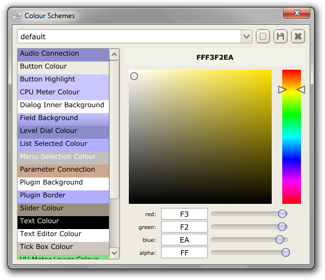
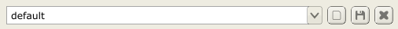
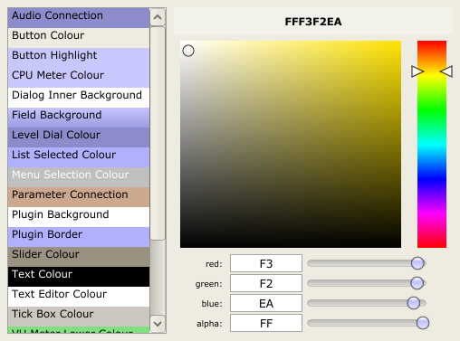

Colour Schemes
The Pedalboard has support for fully-customisable colour schemes. To access the colour scheme selector/editor, go to Options->Colour Schemes.

Colour Scheme Selection/Saving

To switch between existing colour schemes, simply select your desired scheme via the combo box. The three buttons to the right of it let you: Create a new colour scheme based on the currently selected scheme; Save the current scheme; Delete the current scheme. To rename a colour scheme: make sure it is selected, then click it's name in the combo box.
Colour Scheme Editing

Editing a colour scheme is just a case of selecting a particular element of the scheme via the list on the left, and then changing its colour via the colour controls on the right. In most cases you should see that element of the gui update its colour in real-time. Note that changes will not be permanent unless you click the save button.